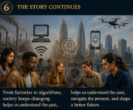
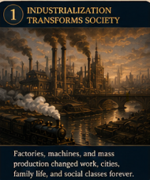
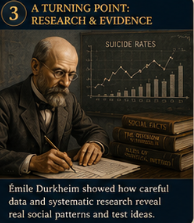
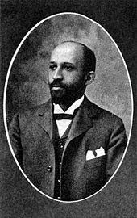
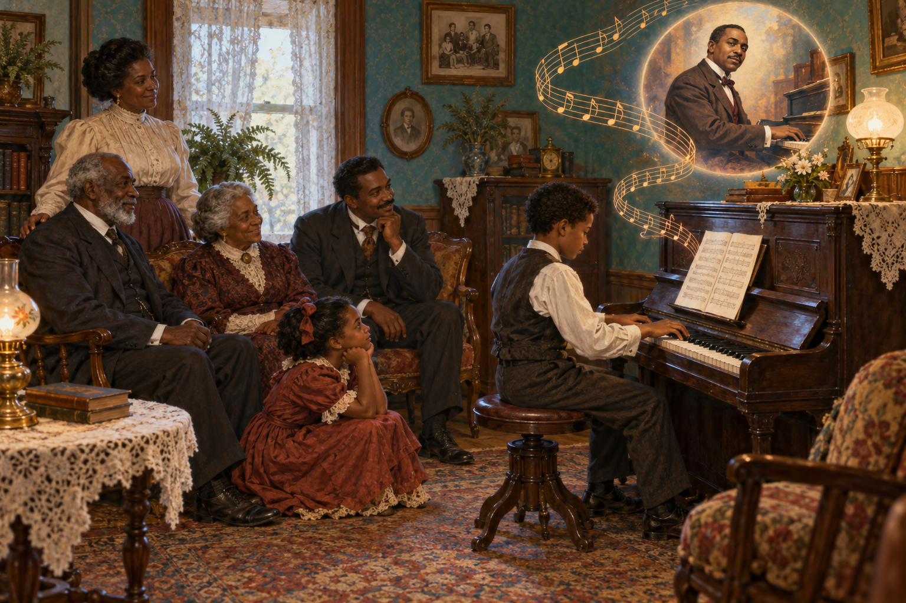

Externalization
People create a practice or meaning. Someone proposes a schedule, label, rule, price, or role.
Eleanor’s 1895 world, the origins of sociology, the Big Three perspectives, classical sociologists, research methods, ethics, and the path from evidence to policy

The factory whistle divides Eleanor’s day into shifts. Trains carry workers and products through town. Telegraph wires move messages faster than people. More families now depend on wages paid by owners they may never meet. Streets bring together immigrants, merchants, laborers, reformers, and people with different religions and languages.
Eleanor experiences these developments personally, but they are not only personal. Her family’s schedule, opportunities, expectations, and worries reflect social structure, the durable arrangement of institutions, roles, relationships, and unequal resources that shapes people’s options.
“People speak of progress as though it were a single road and everyone travels it together. I wonder who chose the road. I wonder why some ride the train while others lay the track.”
A psychologist might study Eleanor’s feelings. An economist might examine wages and production. A political scientist might study labor law. An anthropologist might examine the cultural meanings surrounding work, family, and gender. Sociology can bring these questions together and ask how institutions and patterned relationships shape both the individual and the society.
Sociology is the systematic study of society, social relationships, institutions, and patterned behavior. Science refers to systematic methods for developing knowledge and to the knowledge those methods produce.
| Field | Primary emphasis | Possible question about rising anxiety and depression |
|---|---|---|
| Anthropology | Culture, artifacts, values, communication, and ways of life | Which cultural beliefs and practices shape how distress is understood? |
| Economics | Production, distribution, labor, and allocation of goods and services | How do wages, job insecurity, housing costs, and debt influence distress? |
| Political science | Government, political behavior, law, and power | How do public policy and access to services affect mental health? |
| Psychology | Processes within the individual | How do cognition, emotion, personality, and coping affect distress? |
| Sociology | External social forces across institutions and groups | How do family, work, media, inequality, politics, culture, and community connection interact? |
C. Wright Mills described the sociological imagination as the ability to connect biography with history. A personal trouble occurs within an individual’s immediate relationships. A public issue appears when institutions and conditions shape the experiences of many people.
Example: Eleanor’s father losing one job may appear personal. Widespread layoffs caused by an economic crisis reveal a public issue involving markets, ownership, policy, and family survival.
People do not encounter the world as isolated observers. They learn categories, expectations, symbols, and definitions from other people. When those meanings are repeated and organized through institutions, they begin to feel natural—even though people created them and people can change them.

People create a practice or meaning. Someone proposes a schedule, label, rule, price, or role.
Repetition and institutional support make the arrangement appear external, factual, and independent of any one person.
New members learn the arrangement as normal reality and use it to understand themselves and others.
A virus, storm, or human need for sleep does not exist merely because people agree that it does. Society still constructs categories, explanations, measurements, responsibilities, and responses around physical realities. Sociology asks how material conditions and shared meanings interact—not whether everything is “just an opinion.”
Choose an apparent personal trouble. The four lenses reveal connections that an individual-only explanation can hide.
What happened in this person’s life, relationships, skills, health, and choices?
How do the economy, technology, public events, and the historical period shape the experience?
How do work, education, family, housing, health care, media, and government connect?
Who controls the resources and rules? Who carries the risks and receives the benefits?
Sociological conclusion: One job loss is personal; widespread displacement after an industry closes is also a public issue requiring institutional explanation.
Most people do not witness national politics, wars, scientific discoveries, corporate decisions, or distant social movements directly. We encounter them through selected images, headlines, clips, statistics, commentary, entertainment, and conversations. Media do not simply reflect reality like a mirror. They help decide which parts become visible, how events are framed, which voices sound authoritative, and what audiences are invited to feel.

Large news organizations can support professional reporting, specialist knowledge, editing, legal review, and wide distribution. Ownership, access to officials, deadlines, audience expectations, and advertising can also influence which issues receive sustained attention.
Smaller outlets, local reporters, newsletters, podcasts, and citizen journalists may surface ignored evidence or perspectives. They can also operate with fewer editors, resources, corrections, or accountability systems. “Independent” does not automatically mean more accurate—or less accurate.
TikTok, YouTube, Instagram, Facebook, Snapchat, and other platforms mix journalism, eyewitness material, activism, entertainment, friendship, advertising, persuasion, rumor, and deliberate deception in one feed. Ordinary people can investigate and document events, while popularity can still be mistaken for proof.
Powerful businesses influence fashion, food, music, film, television, beauty standards, and ideas of success because they can finance production, placement, promotion, and repetition. Media industries also respond to audiences; power circulates, but it is not distributed equally.
C. Wright Mills used power elite to describe interconnected leaders in major political, corporate, and military institutions. Those groups often possess exceptional access to money, professional communication, officials, data, and large audiences. Conflict theory asks whose interests a narrative protects; symbolic interactionism asks how repeated words and images create shared meanings; functionalism asks how common information can coordinate society—and what happens when trust fragments.
Do not replace one totalizing story with another. Not every mainstream report is dictated by elites, every independent creator is trustworthy, or every recommendation is political. Institutions, owners, advertisers, journalists, creators, audiences, and technical systems interact. Sociology asks us to investigate those relationships rather than assume that one source category always tells—or always hides—the truth.
An algorithm is a set of steps for turning inputs into an output. The classroom shorthand “if X, then Y may follow” captures the basic logic, although real recommendation systems can use many signals and complex statistical models. If you search for camping tents, a system may predict interest in hiking boots, camp stoves, trail videos, parks, and outdoor insurance. That prediction can be useful. It can also narrow what you see, repeat a theme until it feels unusually common, and make commercial selection look like spontaneous reality.
Select the first action. The simulated feed reveals why each item was placed in front of you. No choice proves what you believe; it supplies a signal that a system may combine with many others.
Separate what was observed from what was inferred. Ask what the post wants you to believe, feel, buy, fear, or share.
Use lateral reading: open new tabs, investigate the author or organization, and see how credible independent sources describe it.
Find the original study, speech, court ruling, dataset, full video, or eyewitness account. A screenshot of a headline is not the underlying evidence.
Consult reporting with different ownership, audiences, political assumptions, and geographic positions. Look for facts that remain stable across accounts.
Ask who gains money, attention, votes, data, status, or access. Strong emotion and long viewing time may benefit a platform even when a claim is weak.
Use “not interested,” unfollow, clear or pause history where appropriate, seek varied sources intentionally, and avoid hate-clicking content you do not want amplified.
Before sharing a high-emotion story, activate every safeguard.
0 of 5 safeguards active. The narrative is still controlling the pace.
Imagine that a labor protest occurs outside a factory. A business feed may emphasize disrupted production; a labor feed may emphasize wages and safety; a local feed may emphasize traffic and community effects; a participant’s video may show an important moment that professional cameras missed. Each can contain accurate observations while selecting a different beginning, voice, cause, and consequence. Your task is not to find a view from nowhere. It is to compare frames, examine evidence, and understand who had the power to make one version travel farther.
Factories, wage labor, urban growth, mass production, and new class relations disrupted household production and older community arrangements.
The American and French Revolutions encouraged people to question inherited authority and imagine that social arrangements could change.
European conquest exposed observers to different cultures. Early comparisons often carried ethnocentric and racist assumptions, making the history of the discipline inseparable from power.
Success in studying the physical world encouraged thinkers to ask whether systematic observation could also explain social patterns.

Early sociology did not develop through one single viewpoint. Some scholars emphasized order and interdependence. Others examined conflict and unequal power. Others studied meaning in face-to-face life. Several crossed these boundaries, and later sociologists often use more than one perspective.
| Sociologist | Primary umbrella | Major contribution | Question carried forward |
|---|---|---|---|
| Auguste Comte | Functionalist foundation | Coined sociology; promoted positivism and social reform | Can systematic evidence reveal principles of social order? |
| Herbert Spencer | Functionalist foundation | Compared society to an organism; opposed intervention | How can evolutionary claims be misused to justify inequality? |
| Émile Durkheim | Structural functionalism | Social facts, solidarity, integration, regulation, anomie | How do social bonds and rules shape apparently private actions? |
| Robert K. Merton | Structural functionalism | Manifest functions, latent functions, dysfunctions | What intended and unintended consequences follow from an institution? |
| Karl Marx | Conflict theory | Class conflict, ownership, exploitation, means of production | Who controls productive resources and benefits from the arrangement? |
| W. E. B. Du Bois | Conflict and critical sociology | Empirical research on racism; double consciousness; color line | How do racial power and institutions structure opportunity? |
| Jane Addams | Applied and conflict-oriented sociology | Hull House research, reform, community partnership, peace | How can knowledge developed with communities improve conditions? |
| Max Weber | Interpretive sociology; conflict | Verstehen, class/status/party, authority, bureaucracy, rationalization | How do meaning and multiple forms of power shape modern life? |
| George Herbert Mead | Symbolic interactionism | The social development of mind and self through interaction | How does taking the role of the other create a social self? |
| Georg Simmel | Symbolic interactionism | Forms of interaction, group size, urban life | How does the pattern of interaction change when a group changes? |
| Erving Goffman | Symbolic interactionism | Dramaturgy, impression management, stigma, total institutions | How do people present identities and manage social situations? |
| Harriet Martineau | Early feminist and comparative sociology | Studied morals, customs, inequality, and American society; translated Comte | Do a society’s everyday practices match its stated values? |
| C. Wright Mills | Conflict and critical sociology | Sociological imagination and power elite | How do institutions connect private lives to concentrated power? |

Durkheim treated social facts as collective conditions that exist beyond one person and exert social pressure. His study of suicide rates compared groups rather than treating every death as an isolated decision. He connected patterns to social integration and regulation.
Four analytical types: egoistic suicide involves weak integration; altruistic suicide involves extremely strong integration; anomic suicide follows disrupted regulation; fatalistic suicide involves oppressive regulation and blocked futures. These are explanations of social patterns, not labels for diagnosing one person.
Eleanor connection: Rapid industrial change can weaken established guidance and create anomie. New occupational interdependence can also produce organic solidarity.
Addams founded Hull House in Chicago in 1889. Settlement residents worked with immigrant and working-class communities, documented neighborhood conditions, and pursued reforms in labor, education, public health, and peace. Her work joined sociology with public action. She received the Nobel Peace Prize in 1931.
Addams helps students see applied sociology: the use of sociological knowledge in a specific setting. Her history also reveals how academic institutions minimized women whose sociology centered reform.

Du Bois became the first African American to earn a doctorate from Harvard. In The Philadelphia Negro, he mapped households and studied employment, health, education, crime, and neighborhood life. His evidence challenged claims that racial inequality resulted from supposed group inferiority.
Double consciousness describes the tension of knowing oneself through one’s own experience while also confronting a degrading view imposed by a racist society. Du Bois later helped establish the NAACP with Addams, Florence Kelley, and others.
Mills warned that major corporate, political, and military leaders can form a connected power elite whose decisions shape lives far beyond their immediate circles. He urged sociologists to connect social analysis to the problems of their time.
Today’s question: How do concentrated ownership, political influence, algorithms, and fragmented information affect what people know and whose interests become policy?
A theory is a general explanation of how parts of the social world relate and affect one another. A perspective directs attention. No single lens captures all of social reality.
Definition: Society is a system of interrelated parts. Sociologists study structure, how the parts fit together, and function, how an arrangement contributes to continuity or stability.
Central questions: What need does this institution meet? How does it connect to other institutions? What happens elsewhere when this part changes?
Merton’s concepts: A manifest function is intended and recognized. A latent function is unintended or less obvious. A dysfunction undermines stability or creates harm.
Eleanor’s factory example: The manifest function is producing goods and wages. Latent functions include bringing strangers together and changing courtship networks. Dysfunctions include dangerous labor, polluted neighborhoods, family disruption, and economic dependence on one employer.
Useful for: institutions, social cohesion, role coordination, and system consequences. Caution: A focus on stability can make inequality or resistance look less important than it is.
Definition: Society contains groups competing over scarce resources, authority, status, and the power to define rules. Groups with greater power can shape institutions to preserve advantages.
Central questions: Who owns or controls resources? Who makes the rules? Who benefits, who pays, and whose viewpoint becomes common sense?
Marx’s concepts: The bourgeoisie own the means of production. The proletariat sell their labor. Class conflict grows from different relationships to ownership and profit. Contemporary conflict theory examines race, gender, colonialism, organizations, and other power relations as well as class.
Eleanor’s factory example: Owners control investment and working conditions, while workers depend on wages. A safety rule may protect workers, reduce profits, or emerge only after organizing changes the balance of power.
Useful for: inequality, law, power, exploitation, social change, and institutional exclusion. Caution: A conflict analysis can understate cooperation, shared meanings, or attachments that do not reduce neatly to competition.
Definition: Society develops through interaction. People act toward objects, identities, and situations according to meanings they learn, negotiate, and revise.
Central questions: What does this symbol mean to participants? How do people define the situation? How do labels and repeated encounters shape identity?
A symbol is something that carries learned meaning and supports communication. Words, clothing, gestures, titles, money, grades, and online reactions operate as symbols. The definition of the situation matters because people respond to what they believe is happening.
Eleanor’s factory example: A factory uniform may signify skill and pride to one worker, low status to a wealthy resident, and independence to a young woman earning wages. The physical uniform remains the same while meanings influence interaction.
Useful for: identity, language, labeling, small groups, impression management, and everyday meaning. Caution: Microanalysis can miss institutions and unequal resources that shape the interaction before it begins.
Structural functionalism and conflict theory commonly use macro-level analysis to study large patterns, institutions, and systems. Symbolic interactionism commonly uses micro-level analysis to study encounters and meanings. Sociologists may connect both levels. A conversation at a factory gate takes place inside class relations, gender expectations, labor law, and an industrial economy.
Common sense draws from limited experience and from cultural ideas that may never have been tested. Research asks whether a claim is accurate, how widely it applies, under which conditions it changes, and what evidence could disconfirm it.
A general explanation. Example: Strong social integration can protect well-being.
A testable prediction. Example: Students who report stronger campus belonging will report lower loneliness.
The presumed cause or predictor. Example: reported campus belonging.
The outcome expected to change. Example: reported loneliness.
An operational definition states exactly how a variable will be measured. “Belonging” might be measured through responses to a validated scale. “Loneliness” requires its own measure. A hypothesis does not prove causation merely because two variables move together.
Collects standardized answers from a sample. Questions may be closed-ended or open-ended.
Best for: distributions, attitudes, comparisons, larger samples.
Limits: wording, nonresponse, social desirability, interviewer effects.
Eleanor question: How many factory households experienced a wage cut this year?
Uses structured, semi-structured, or open conversation to study experience and meaning.
Best for: depth, sequence, interpretation, sensitive experiences.
Limits: time, interviewer influence, smaller samples.
Eleanor question: How do women describe the meaning of paid factory work?
The researcher enters a setting, observes interaction, and may participate in everyday activity while keeping systematic field notes.
Best for: informal norms, subcultures, behavior in context.
Limits: access, researcher role, ethics, generalizability.
Eleanor question: How do workers teach newcomers the unwritten rules of the floor?
Compares an experimental group exposed to an independent variable with a control or comparison group.
Best for: testing causal effects when control and ethics permit.
Limits: artificial settings, ethical boundaries, unequal attrition.
Modern question: Does removing public “like” counts change posting behavior?
Analyzes data already collected by governments, researchers, organizations, or archives.
Best for: trends, large populations, historical comparison, lower cost.
Limits: researcher cannot redesign measures or verify every original procedure.
Eleanor question: What do census and mortality records show about industrial towns?
Systematically studies newspapers, diaries, laws, advertisements, films, photographs, websites, or social media.
Best for: messages, representations, changing meanings, institutional records.
Limits: missing records, selection bias, context, authenticity.
Eleanor question: How did newspapers describe women workers and labor strikes?
Examines one person, event, organization, community, or situation in depth using multiple forms of evidence.
Best for: complexity, rare events, process, theory development.
Limits: one case cannot automatically represent a population.
Example: Hull House as a case of community research and reform.
Uses traces or observations that do not require people to respond directly, such as wear patterns, archival residues, or aggregate behavior.
Best for: behavior less altered by awareness of observation.
Limits: meaning may be ambiguous; privacy and consent still require ethical review.
Example: Comparing use patterns across public spaces without identifying individuals.
| Concept | Meaning | Why it matters |
|---|---|---|
| Population | The full group the researcher wants to understand. | A question about all SOC-210 students needs a clearly defined population. |
| Sample | The people or cases actually studied. | A sample must represent the population well enough for the claim being made. |
| Random sample | Every member of the population has an equal chance of selection. | Reduces systematic selection bias. |
| Stratified random sample | Researchers randomly sample within meaningful subgroups. | Ensures smaller groups are represented. |
| Validity | The measure captures what the researcher intends to measure. | A question about “screen time” may not validly measure social connection. |
| Reliability | A procedure produces consistent results under consistent conditions. | Ambiguous questions can produce unstable responses. |
| Generalizability | Findings from a sample reasonably apply to a larger population. | A case study can be valuable without representing everyone. |
| Replication | A study is repeated to see whether similar results appear. | One finding becomes more trustworthy when it survives careful repetition. |
| Outlier | A valid case far above or below most observations. | Outliers may reveal error, unusual circumstances, or meaningful diversity. |
These measures answer different questions. Select a dataset, predict which number best represents a typical household, and then reveal the results.
Before calculating: Which measure do you expect to describe the typical household most honestly?
The population contains four neighborhoods. Run each design and watch selected people move into the sample. Colors identify strata—not personal worth or fixed identities.
A proportionate design keeps each stratum close to its share of the population. An equal-size design deliberately selects the same number from every stratum so researchers can compare smaller groups. Equal selection is not automatically biased, but population estimates must be weighted. Poorly defined strata, omitted groups, nonresponse, or unweighted unequal selection can distort conclusions.
Reduced-motion and text alternative: The selected dots change position only when motion is allowed. All conclusions are also stated in text and do not depend on animation or color alone.
Ethics guide decisions before, during, and after data collection. Researchers must protect participants while also reporting findings honestly, including findings that make powerful groups uncomfortable.
Explain the study, foreseeable risks, expected participation, and the voluntary nature of involvement in understandable language.
Reduce physical, psychological, social, legal, and economic risks. A worthwhile question does not excuse preventable harm.
Collect only what is needed, protect identities and records, and explain the limits of confidentiality.
Do not fabricate or falsify data. Explain methods, conflicts of interest, funding, uncertainty, and limitations.
Laud Humphreys’s research on anonymous sexual encounters generated controversy because he observed people without informed consent and used deception to locate some participants. Richard Brajuha faced legal pressure to surrender confidential field notes after a restaurant fire. These cases raise difficult questions about deception, privacy, legal demands, and promises made to participants.
Weber argued that sociologists should pursue value-free analysis. Complete neutrality remains difficult because values can influence which questions receive attention and how concepts are defined. Researchers address this problem through transparent procedures, peer criticism, reflexivity, replication, and willingness to revise conclusions.
Evidence does not write policy by itself. Researchers define a problem and examine likely consequences. Communities, agencies, lawmakers, and affected groups interpret the findings alongside values, costs, rights, feasibility, and competing evidence.
Read the arrows in both directions: evaluation may reveal unequal effects or an incorrect assumption, sending researchers and policymakers back to redefine the problem. Public policy is a revisable social process, not the automatic last step of science.
The Minneapolis Domestic Violence Experiment tested police responses to misdemeanor intimate-partner violence and initially reported lower repeat violence following arrest than following separation or advice. The finding influenced mandatory and preferred-arrest policies. Later replication studies produced mixed results across cities and groups, showing why policy should not rest on one study alone.
A sociological policy analysis asks whether an intervention works under different conditions, whether it produces unequal consequences, whether survivors have meaningful choices, and which institutions must coordinate housing, safety, courts, health care, and economic support.
Claim: Raising a posted speed limit will improve traffic flow without increasing serious crashes.

Scott Joplin’s “Maple Leaf Rag” emerged near Eleanor’s era as sheet music, pianos, rail travel, and growing cities helped sounds move among homes, clubs, stores, and regions. Its syncopation—rhythms pushing against an expected beat—offers a musical metaphor for modern life: patterned, energetic, unequal, and changing.
Listen for: the syncopated rhythm—the accented notes that push against the expected beat. If streaming media is unavailable, the chapter’s description and activity provide the same conceptual path.
Shared performances create occasions, identities, and collective memory.
Racial segregation and unequal publishing power shaped who could perform, own, and profit from American music.
Listeners learned whether ragtime signified sophistication, danger, youth, race, or modernity through social interaction.
Choose one sound from daily life in 1895—a train, factory, streetcar, church bell, or piano. How could it become a symbol of the era, and would every social group hear it the same way?
Use sociological imagination, personal troubles and public issues, social structure, and social construction of reality. Explain how the problem connects to institutions and why changing individual behavior alone would be insufficient.
Required format: approximately 100–150 words, at least four bold concepts, one purposeful visual, and approximately 3–6 APA in-text citations.
Match questions and concepts to Comte, Durkheim, Marx, Weber, Addams, Du Bois, Mead, and Goffman.
Open practiceApply structural functionalism, conflict theory, and symbolic interactionism to course situations.
Open practiceConnect individual experience to institutions and public issues.
Open practiceAddams, J. (1910). Twenty years at Hull-House. Macmillan.
American Sociological Association. (2018). Code of ethics.
Berger, P. L., & Luckmann, T. (1966). The social construction of reality: A treatise in the sociology of knowledge. Anchor Books.
Du Bois, W. E. B. (1899). The Philadelphia Negro: A social study. University of Pennsylvania.
Durkheim, E. (1951). Suicide: A study in sociology (J. A. Spaulding & G. Simpson, Trans.). Free Press. (Original work published 1897)
Marx, K., & Engels, F. (1978). Manifesto of the Communist Party. In R. C. Tucker (Ed.), The Marx-Engels reader (2nd ed., pp. 469–500). W. W. Norton. (Original work published 1848)
Mills, C. W. (1959). The sociological imagination. Oxford University Press.
Entman, R. M. (1993). Framing: Toward clarification of a fractured paradigm. Journal of Communication, 43(4), 51–58. https://doi.org/10.1111/j.1460-2466.1993.tb01304.x
McCombs, M. E., & Shaw, D. L. (1972). The agenda-setting function of mass media. Public Opinion Quarterly, 36(2), 176–187. https://doi.org/10.1086/267990
Noble, S. U. (2018). Algorithms of oppression: How search engines reinforce racism. New York University Press.
Stanford Institute for Human-Centered Artificial Intelligence. (n.d.). What is an algorithm? https://hai.stanford.edu/ai-definitions/what-is-an-algorithm
Wineburg, S., & McGrew, S. (2019). Lateral reading and the nature of expertise: Reading less and learning more when evaluating digital information. Teachers College Record, 121(11), 1–40. https://doi.org/10.1177/016146811912101102
Sherman, L. W., & Berk, R. A. (1984). The specific deterrent effects of arrest for domestic assault. American Sociological Review, 49(2), 261–272.
Weber, M. (1978). Economy and society: An outline of interpretive sociology (G. Roth & C. Wittich, Eds.). University of California Press. (Original work published 1922)
This introduction builds three transferable habits: connecting biography with history, evaluating evidence, and seeing how institutions and shared meanings shape decisions.
| College pathway | Section benefit | At work |
|---|---|---|
| 🍎 Education | Connect student experiences to family, school, policy, and inequality. | Use data and sociological imagination instead of blaming learners for patterned barriers. |
| 🩺 Medical and nursing | Recognize social determinants, roles, institutions, and unequal outcomes. | Ask how housing, work, trust, and access affect a patient’s options. |
| 🤲 Caregiving and human services | Separate personal troubles from public issues and locate support systems. | Coordinate services while protecting client dignity and voice. |
| 🧠 Counseling and behavioral health | Place individual experience within relationships, culture, and institutions. | Combine person-centered care with awareness of stigma and structural stress. |
| 🦷 Rehabilitation and dental | See how norms, access, and social roles shape adherence and disability. | Design plans around a patient’s real environment rather than an assumed ideal. |
| 🚒 Public safety | Evaluate patterns, evidence, authority, and community trust. | Distinguish anecdotes from data and assess whether a policy produces unequal effects. |
| 🔧 Skilled trades | Understand occupational culture, organizations, technology, and social change. | Explain how safety rules and workplace roles are created, taught, and revised. |
| ✂️ Personal-care services | Interpret identity, interaction, presentation, and community relationships. | Build trust across differences and notice how beauty standards are socially constructed. |
| 🔬 STEM | Use research design, sampling, ethics, and policy evaluation. | Ask who is represented in data, who benefits from innovation, and what consequences require study. |